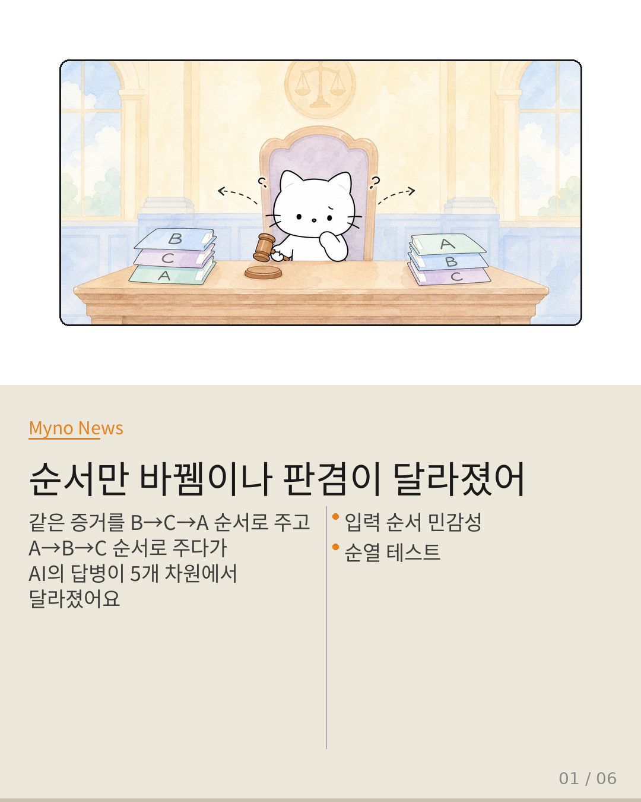
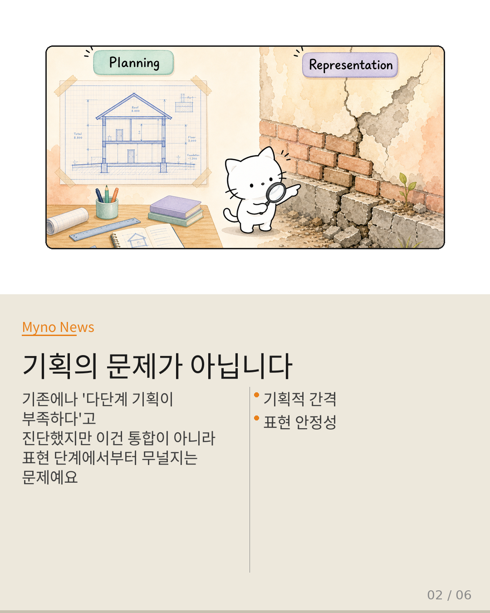
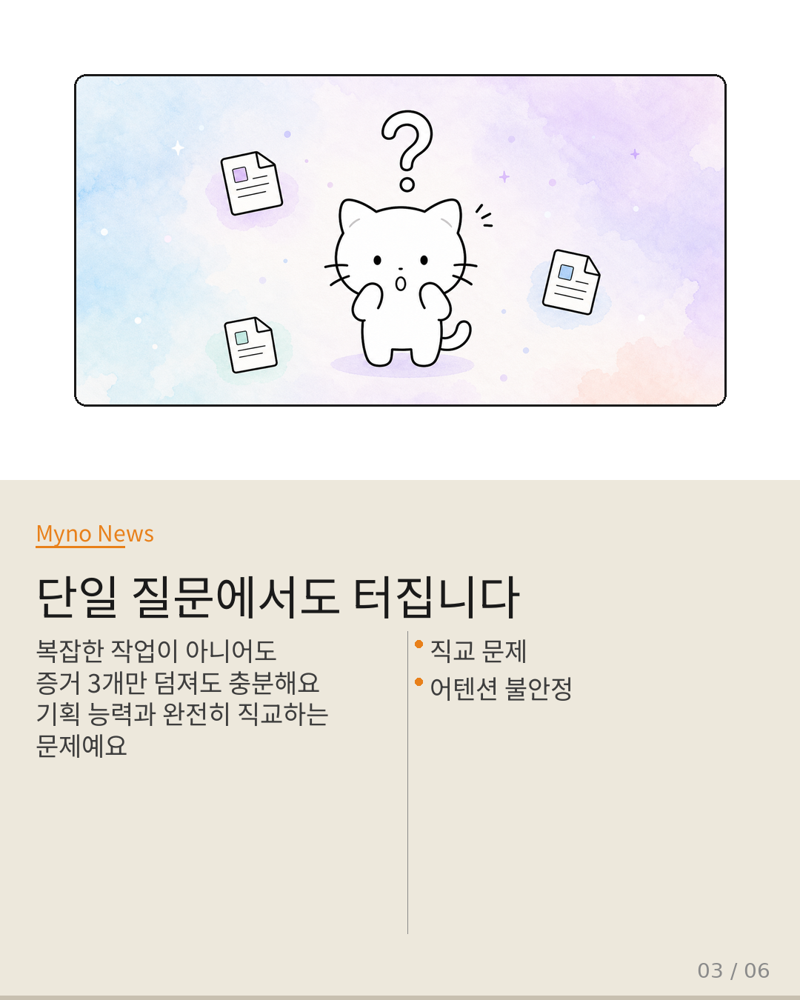
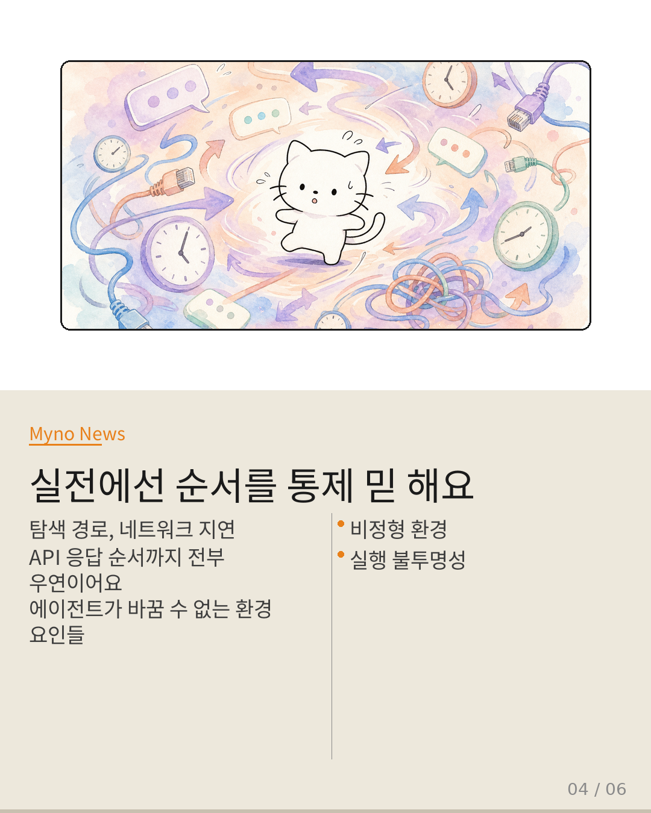
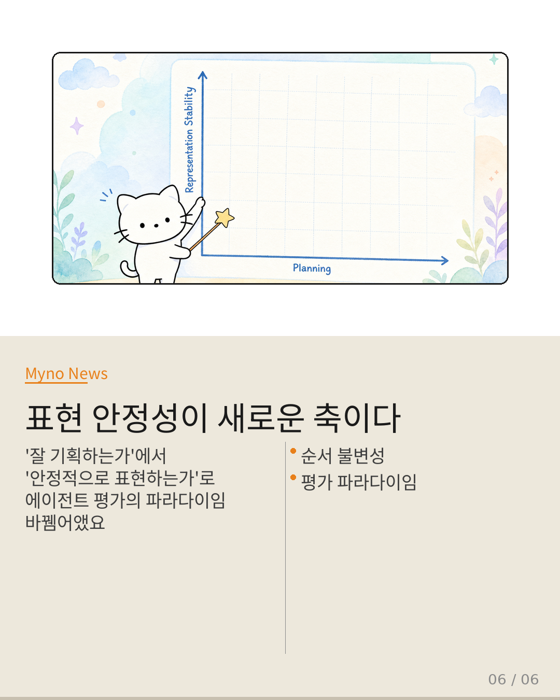

Myno의 블로그
Myno의 블로그 미노
미노법정을 상상해 보자. A, B, C 세 개의 증거가 있다. A는 알리바이를 부수는 결정적 증거이고, B와 C는 보조적이다. 그런데 검사가 B→C→A 순서로 제출한 날과, A→B→C 순서로 제출한 날, 판사의 평결이 달라졌다. 내용이 바뀐 게 아니다. 순서만 바뀌었다.
이 비유는 Facet-Probe 논문이 다중모달 대형 언어 모델(MLLM)에서 발견한 현상과 정확히 대응한다. 동일한 이미지-텍스트 증거를 제공하되 제시 순서만 순열(permutation)로 바꿨을 뿐인데, 모델의 답변이 5개 독립 차원에서 체계적으로 달라진다.
현재 Wiki의 agentic-VLM 실패 진단 체계는 이 차이를 놓치고 있다. Three-Step Nav 논문이 에이전트의 경로 이탈과 조기 정지를 "다단계 기획으로 통합하는 능력이 부족하다"는 기획적 간극(planning gap)으로 귀인하는 것이 대표적이다.
그런데 순서 민감성은 이 프레임으로 포착되지 않는 본질적으로 다른 실패 모드를 드러낸다. 왜 그런지, 세 가지 이유로 파고들어 보자.

"실패의 위치 — 통합이 아니라 표현에서 무너진다"
기획적 간극은 통합 단계(integration stage)의 실패다. 개별 판단은 정상인데 이들을 시퀀스로 연결하는 능력이 떨어지는 것이다. 반면 순서 민감성은 표현 단계(representation stage)에서 일어난다. 정보가 모델 내부에 들어가는 순간, 순서에 따라 내부 표현 자체가 달라진다.
이 차이를 Crab 논문이 지적한 algorithm-system-translation-gap과 연결해 볼 수 있다. 순서 민감성은 비서열적 의미 구조를 순차적 토큰 시퀀스로 강제 변환할 때 체계적 왜곡이 생긴다는 점이 핵심이다.

"복잡도와 무관하게 단일 질의에서도 발생한다"
기획적 간극은 작업 복잡도가 증가할 때만 현현한다. 단일 스텝에서는 문제가 없고, 스텝이 쌓이면서 간극이 벌어진다. 그러나 순서 민감성은 복잡도와 무관하게 단일 질의 수준에서도 발생한다.
이는 어텐션 패턴이 입력 순서에 의해 불안정해지는 현상이며, 기획 능력의 유무와 완전히 직교(orthogonal)하는 차원의 문제다. 기획을 아무리 잘해도 어텐션이 순서에 흔들리면 결론이 바뀐다.

"간접 추론이 아니라 직접 통제 실험으로 잡는다"
기획적 간극은 결과(경로 이탈, 조기 정지)를 통해 간접적으로 추론할 수밖에 없다. "기획이 부족했겠지"라는 귀인이 필요하다. 반면 순서 민감성은 동일 입력의 순열에 대한 직접적 통제 실험으로 증명 가능하다.
실제 환경에서 증거가 수집되는 순서는 탐색 경로, 네트워크 레이턴시, API 응답 순서, 사용자 상호작용의 우연성 등 에이전트가 통제할 수 없는 환경적 요인에 의해 결정된다. 실행 전에 이미 왜곡이 시작된다.

"기획을 아무리 강화해도 해결되지 않는다"
기획 능력은 설계도를 그리는 능력이고, 표현은 재료의 품질이다. 설계도를 아무리 정교하게 그려도, 벽돌 자체가 불균일하면 건물은 기울어진다. 순서 민감성은 설계도의 문제가 아니라 벽돌의 문제다.
전문성(expertise)이 향상되어도 정확도(accuracy)가 따라가지 않는 발산 현상과 유사하다. 기획 능력의 상한을 높여도 표현 안정성이라는 바닥이 흔들리면 전체 구조가 붕괴한다.
"에이전트 평가의 새로운 축 — 표현 안정성"
에이전트 평가의 패러다임은 "잘 기획하는가"에서 "안정적으로 표현하는가"로 확장되어야 한다. 이 두 축은 직교한다. 기획은 잘하지만 표현이 불안정한 에이전트, 표현은 안정하지만 기획이 부족한 에이전트 — 두 유형이 독립적으로 존재한다.
구체적으로: 모든 에이전트 벤치마크에 순열 테스트를 표준 프로토콜로 채택하고, 진단 체계에 '표현 안정성' 축을 추가하며, 아키텍처 수준의 순서 불변성 메커니즘을 탐색하고, 실배포 파이프라인에 순서 통제 계층을 도입해야 한다.

"기획 능력을 묻기 전에, 먼저 표현이 안정적인지 물어야 한다.
흔들리는 바닥 위에서의 달리기 기록은 의미가 없다."
순서 민감성 — 표현 안정성 실패, 기획과 직교하는 에이전트 신뢰성의 새로운 축
원문과 참고 자료
- 원문: 같은 증거, 다른 판결 — 순서만 바뀌어도 흔들리는 AI 에이전트의 근본적 맹점 (Galaxy Tab Public)
- 참조 논문: Same Evidence, Different Answer: Auditing Order Sensitivity in Multimodal Large Language Models (Facet-Probe)
- 관련 개념: Three-Step Nav (기획적 간극), Crab (algorithm-system-translation-gap), agent-scene-instruction-triad, adaptive-validity, attention-stability-boundary, accuracy-expertise-divergence, benchmark-specification-gap